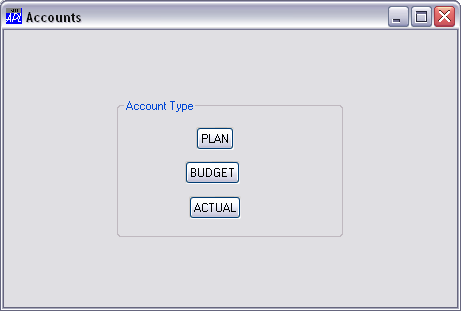

You create objects using ⎕WC. Its left argument is a character vector that specifies the name of the object to be created. Its right argument specifies the object's Type and various other properties. Its (shy) result is the full pathname of the newly created object.
The following statement creates a Form called 'f1' with the title "A Default Form" and with default size, position, etc.
'f1' ⎕WC 'Form' 'A Default Form'
Objects are created in a hierarchy. The Form we have just created is a "top-level" object to which we can attach other child objects, like buttons, scrollbars and so forth. You can create any number of top-level objects like this, up to a limit imposed by MS-Windows and your system configuration.
For reasons which will become apparent later, there is a single Root object whose name is '.' (dot) or '#'. It acts a bit like the root directory in a Windows system file structure, and is the implied parent of all the top-level objects you create.
When you create a top-level object, you don't actually have to specify that it is a child of the Root; this is implied. For any other object, you specify its position in the hierarchy by including the names of its "parent", "grand-parent", and so forth in its name.
Object names are specified in the form:
'grandparent.parent.child'
where the "." character is used to separate the individual parts of the name. There is no explicit limit to the depth of the object hierarchy; although in practice it is limited by the rules governing which objects may be children of which others.
Complete object names must be unique, although you could use the same sub-name for two objects that have different parents. For example, it would be valid to have 'form1.btn1' and 'form2.btn1'.
Apart from the "." separator, names may include any of the characters A-Z, a-z, and 0-9. They are case-sensitive, so 'Form1' is not the same name as 'form1'.
For graphical objects, it is permissible to omit the last part of the name, although the parent name must be specified followed by a "." (dot). Further information is given later in this chapter.
The right argument of ⎕WC is a list of properties for the object being created. Apart from trivial cases, it is always a nested vector. The first item in the list must specify the object's Type. Other properties take default values and need not always be defined. Properties are discussed more fully in the next section.
Like functions, variables and operators, GUI objects are workspace objects and are )SAVEd with it. GUI Objects are also namespaces and they have a name-class of 9. The expression )OBJECTS or ⎕NL 9 may be used to report their names. Like other namespaces, GUI objects may be copied from a saved workspace using )COPY or ⎕CY.
This example illustrates how an object hierarchy is defined. The following statements create a Form called 'accounts' which contains a Group called 'type' and some Buttons called 'PLAN', 'BUDGET' and 'ACTUAL'. The embedded spaces in these statements are intended only to improve clarity. The numbers refer to the object's position within its parent. This will be discussed in detail later.
'accounts' ⎕WC 'Form' 'Accounts' 'accounts.type' ⎕WC 'Group' 'Account Type' 'accounts.type.PLAN' ⎕WC 'Button' 'PLAN' (20 35) 'accounts.type.BUDGET' ⎕WC 'Button' 'BUDGET' (45 30) 'accounts.type.ACTUAL' ⎕WC 'Button' 'ACTUAL' (70 32)

Schematically, this object structure looks as follows:
__ACTUAL .___accounts___type___BUDGET __PLAN